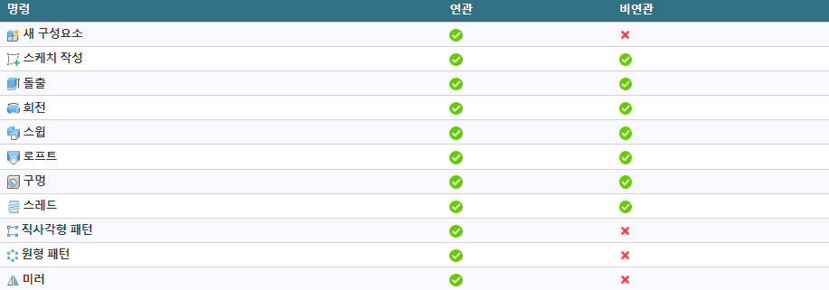

내부 편집
Contents
내부 편집#
Fusion 360의 내부 편집을 사용하면 상위 디자인을 종료하지 않고 조립품 환경에서 외부 구성요소를 활성화하고 편집할 수 있습니다.

내부 편집을 활성화하면 구성요소를 편집할 때 조립품 내의 실제 위치에서 구성요소를 볼 수 있습니다.
내부 편집을 사용하면 상위 디자인의 컨텍스트 내에서 외부 구성요소를 편집할 수 있으므로 하향식 디자인 접근 방식을 보다 쉽게 사용할 수 있습니다.
외부 구성요소에 대해 내부 편집을 활성화하는 경우:
외부 구성요소가 캔버스에 표시됩니다.
상위 디자인의 다른 구성요소가 비활성화됩니다. 이러한 객체는 편집할 수 없지만 캔버스에 계속 표시되어 디자인의 전체 컨텍스트를 제공합니다.
외부 구성요소와 비활성 구성요소의 형상 간에 연관 관계를 작성하거나 상대 거리를 측정할 수 있습니다.
내부 편집 종료  를 클릭한 후 참조된 구성요소의 크기나 위치를 변경하면 방금 편집한 구성요소도 업데이트됩니다.
를 클릭한 후 참조된 구성요소의 크기나 위치를 변경하면 방금 편집한 구성요소도 업데이트됩니다.
주: 구성요소는 상위 디자인의 컨텍스트 내에서만 업데이트됩니다.
환경 개요#

내부 편집 메뉴 및 경계:
메뉴가 캔버스 상단에 표시됩니다.
비연관
 : 로컬 편집만 허용합니다. 조립품의 다른 구성요소와 이 외부 구성요소 간에 연관 참조를 작성하지 않습니다.
: 로컬 편집만 허용합니다. 조립품의 다른 구성요소와 이 외부 구성요소 간에 연관 참조를 작성하지 않습니다.연관
 : 조립품의 다른 구성요소와 이 외부 구성요소 간에 연관 참조를 작성합니다.
: 조립품의 다른 구성요소와 이 외부 구성요소 간에 연관 참조를 작성합니다.참조 객체
 : 현재 디자인과 다른 구성요소, 바디, 스케치 및 구성 형상 간의 연관 참조를 작성합니다.
: 현재 디자인과 다른 구성요소, 바디, 스케치 및 구성 형상 간의 연관 참조를 작성합니다.
아이콘은 활성 조립품 컨텍스트의 연관성을 나타냅니다.
편집 중인 외부 구성요소의 이름이 표시됩니다.
활성 조립품 컨텍스트의 이름이 괄호 안에 표시됩니다.
캔버스 주위에 파란색 프레임이 나타납니다.
브라우저 및 캔버스의 활성 외부 구성요소:
편집 중인 외부 구성요소가 브라우저에서 파란색으로 강조 표시되고 캔버스에 완전히 불투명으로 표시됩니다.
조립품 컨텍스트 폴더에는 작성하는 조립품 컨텍스트가 포함되어 있습니다.
활성 조립품 컨텍스트가 파란색으로 강조 표시됩니다.
외부 구성요소의 타임라인이 표시됩니다.
기타 구성요소:
디자인의 다른 구성요소는 비활성화되어 있습니다.
비활성 구성요소는 낮은 불투명도로 표시되지만 여전히 선택할 수 있습니다.
조립품 컨텍스트#
상위 및 같은 계열 구성요소의 형상을 참조하여 편집 중인 구성요소의 크기나 쉐이프를 정의하는 경우 상위 디자인에 조립품 컨텍스트가 작성됩니다.
조립품 컨텍스트는 특정 시점의 상위 디자인과 외부 구성요소 간의 연결입니다. 조립품과 관련된 위치 정보가 들어 있습니다. 이 대화상자에서는 상위 디자인에 대한 연관을 유지하기 위해 형상이 파생됩니다.
전체 조립품 컨텍스트에는 다음이 포함됩니다.
브라우저에서 하위 외부 구성요소 아래에 내포된 조립품 컨텍스트 폴더의 조립품 컨텍스트.

상위 디자인의 타임라인에 표시되는 표식기.

주: 조립품 컨텍스트 폴더에는 각 조립품 컨텍스트가 별도로 보관됩니다.
다음을 수행하는 경우 내부 편집 중에 조립품 컨텍스트가 작성됩니다.
치수를 다른 구성요소와 연관
구속조건을 다른 구성요소와 연관
스케치 투영을 다른 구성요소와 연관
구성요소를 제 위치로 이동하고 현재 위치 캡처
조립품 컨텍스트가 활성 상태일 때 작성한 피쳐는 해당 피쳐에 링크됩니다. 조립품 컨텍스트 피쳐가 상위 디자인의 타임라인에 추가됩니다.
형상을 참조하면 외부 구성요소에 조립품 컨텍스트로 파생됩니다. 이렇게 하면 형상을 조립품 외부에서 열 때 외부 구성요소에 사용할 수 있습니다. 다음과 같은 경우 외부 구성요소를 자체 탭에서 열고 조립품 컨텍스트를 활성화할 수 있습니다.
조립품 컨텍스트 외부에서 작업하기 위해 참조해야 하는 모든 객체를 참조했습니다.
내부 편집 내에서 사용할 수 있는 것 이상의 확장된 모델링 도구 세트에 액세스해야 합니다.
로컬 컨텍스트#
각 조립품 컨텍스트 폴더에는 로컬 컨텍스트가 포함되어 있습니다.

로컬 컨텍스트는 외부 구성요소를 디자인을 해당 문서 탭에서 열 때 디자인이 표시되는 것으로 나타냅니다. 하위 구성요소에 대한 고유한 위치 세트를 유지합니다.
로컬 컨텍스트를 활성화하는 경우:
상위 디자인의 형상이 숨겨져 있어 선택할 수 없습니다.
상위 디자인의 형상에는 연관을 지정할 수 없습니다.
외부 구성요소의 하위 구성요소는 외부 구성요소에서의 위치에 따라 배치됩니다.
조립품 컨텍스트에서 사용할 수 없는 위치, 접합 및 동작과 관련된 일부 명령을 사용할 수 있습니다.
주: 조립품 환경에서 로컬만 명령을 활성화하면 로컬 컨텍스트로 자동 전환됩니다. 명령이 종료되면 로컬 컨텍스트에 남아 있게 됩니다.
자동 활성화#
조립품 컨텍스트에서 형상에 종속된 피쳐를 편집하면 조립품 컨텍스트가 자동으로 활성화됩니다.
참조 객체#
참조 객체 명령은 조립품의 외부 구성요소와 다른 디자인 피쳐 간에 명시적으로 연관 참조를 작성합니다.

연관 내부 편집 중에 참조 객체 명령은 캔버스 상단의 내부 편집 메뉴에서 사용할 수 있습니다.
브라우저 또는 캔버스에서 디자인 피쳐를 선택합니다. 참조된 디자인 피쳐는 조립품 컨텍스트로 파생됩니다.
상세 디자인 작업을 시작하기 전에 참조 객체 명령을 사용하여 조립품의 객체를 명시적으로 참조할 수 있습니다. 상세 디자인 작업을 보다 명확하고 쉽게 수행하려면 컨텍스트에 따라 구성요소에 중요한, 조립품 내 객체만 참조해야 합니다.

조립품 뷰

참조 객체가 있는 활성화된 조립품 컨텍스트
note: 참조 객체 명령은 비연관 내부 편집 중에는 사용할 수 없습니다.
컨텍스트에서 외부 구성요소 편집
컨텍스트에서 외부 구성요소 편집#
Fusion 360의 상위 디자인 컨텍스트에서 외부 구성요소를 편집하는 방법을 알아봅니다.
외부 구성요소를 디자인에 삽입하려면 데이터 패널에서 구성요소를 탐색하고 마우스 오른쪽 버튼을 클릭한 다음 현재 디자인에 삽입을 클릭합니다.
브라우저에서 편집하려는 외부 구성요소 위에 마우스를 놓은 다음 내부 편집
 을 클릭합니다.
을 클릭합니다.
선택 사항: 내부 편집 메뉴에서 연관성을 조정합니다.
연관
비연관

구성요소를 비연관 변경으로 변경합니다.
스케치 및 기타 피쳐를 직접 편집할 수 있습니다.
비활성 구성요소를 기준으로 거리를 측정합니다.
조립품 컨텍스트를 작성하려면 상위 디자인의 비활성 구성요소에서 형상을 참조합니다.
모서리, 면 및 점
치수 및 구속조건
위치
투영법
종료
주: 비활성 구성요소의 형상을 참조하는 경우 조립품 컨텍스트 폴더가 외부 구성요소 노드 아래의 브라우저에 작성됩니다. 이 폴더에 컨텍스트가 작성되며, 나중에 돌아가서 편집할 수 있습니다.
내부 편집 메뉴에서 내부 편집 종료
 를 클릭하여 상위 디자인으로 돌아갑니다.
를 클릭하여 상위 디자인으로 돌아갑니다.
변경 사항을 저장합니다.
팁: 조립품 컨텍스트를 작성하여 체계적으로 관리할 수 있도록 명명합니다.
상위 디자인의 타임라인 내에 조립품 컨텍스트가 작성됩니다.
조립품에서 연관 참조 작성
조립품에서 연관 참조 작성#
참조 객체 명령을 사용하여 Fusion 360의 조립품에 있는 외부 구성요소와 다른 디자인 피쳐 간의 명시적 연관 참조를 작성하는 방법에 대해 알아봅니다.
연관 참조 작성#
외부 구성요소가 포함된 조립품을 엽니다.
브라우저에서 외부 구성요소 옆에 있는 내부 편집
을 클릭합니다.캔버스 상단에서 내부 편집 메뉴를 확장합니다.
참조 객체를 선택합니다.
참조 객체 대화상자가 표시됩니다.
브라우저 또는 캔버스에서 조립품에 참조할 디자인 피쳐를 선택합니다.
구성요소
바디
스케치
구성 형상

선택 사항: 대화상자에서 객체, 폴더 또는 구성요소를 선택한 다음
X버튼을 클릭하여 제외합니다.확인을 클릭합니다.
브라우저에서 선택한 디자인 피쳐는 조립품 컨텍스트로 파생됩니다.

내부 편집 메뉴에서 내부 편집 종료
를 클릭하여 상위 디자인으로 돌아갑니다.조립품을 저장합니다.
외부 구성요소를 마우스 오른쪽 버튼으로 클릭합니다.
열기를 선택하여 해당 문서 탭에서 디자인을 엽니다.
브라우저에서 조립품 컨텍스트 폴더를 확장합니다.
조립품 컨텍스트 옆에 있는 컨텍스트 활성화 라디오 버튼을 클릭하여 활성화합니다.

참조 객체 명령을 사용하여 참조한 디자인 피쳐는 상황에 따라 표시됩니다. 불투명도가 감소됩니다. 외부 구성요소에서 작업할 때 디자인 피쳐를 참조할 수 있습니다.
외부 구성요소의 형상과 참조된 디자인 피쳐 간에 연관 관계를 작성하면 참조 객체 대화상자에서 객체에 굵은 밑줄과 밑줄이 표시됩니다. 디자인 피쳐를 제외하면 객체가 회색 취소선으로 표시됩니다.

note: 참조된 디자인 피쳐가 조립품에서 변경되면 조립품을 업데이트하고 오래된 조립품 컨텍스트를 동기화할 때 변경 사항이 외부 구성요소에 반영됩니다. 외부 구성요소의 형상과 조립품의 참조된 디자인 피쳐 사이에 작성한 연관 관계는 변경 사항을 반영하도록 업데이트됩니다.
비디오#

기존 조립품 컨텍스트 편집
기존 조립품 컨텍스트 편집#
Fusion 360에서 기존 조립품 컨텍스트를 활성화하고 편집하는 방법에 대해 알아봅니다.
조립품 환경이나 자체 탭의 브라우저 또는 타임라인에서 기존 조립품 컨텍스트를 활성화하고 편집할 수 있습니다.
브라우저에서 조립품 컨텍스트 활성화#

브라우저에서 외부 구성요소의 노드를 확장합니다.
조립품 컨텍스트 폴더를 확장합니다.
조립품 컨텍스트 위에 마우스를 놓은 다음 컨텍스트 활성화 라디오 버튼을 클릭합니다.
주: 조립품 컨텍스트를 마우스 오른쪽 버튼으로 클릭하고 컨텍스트 활성화를 선택할 수도 있습니다.
필요에 따라 변경합니다.
내부 편집 종료
를 클릭하여 상위 디자인으로 돌아갑니다.
주: 조립품 내에서만 조립품 컨텍스트를 편집할 수 있습니다.
조립품 컨텍스트를 편집할 때 외부 구성요소에서 직접 작업할 때 다운스트림용으로 사용할 수 있도록 추가 형상을 조립품 컨텍스트에 참조할 수 있습니다.
타임라인에서 조립품 컨텍스트 편집#

타임라인에서 조립품 컨텍스트 피쳐를 찾습니다.
조립품 컨텍스트를 마우스 오른쪽 버튼으로 클릭한 다음 컨텍스트 편집을 선택합니다.
필요에 따라 변경합니다.
내부 편집 종료
을 클릭하여 상위 디자인으로 돌아갑니다.
조립품 컨텍스트 외부에서 조립품 컨텍스트 편집#
다음과 같은 경우 자체 탭에서 외부 구성요소를 열고 조립품 컨텍스트를 활성화합니다.
조립품 컨텍스트 외부에서 작업하기 위해 참조해야 하는 모든 객체를 참조했습니다.
내부 편집 내에서 사용할 수 있는 것 이상의 확장된 모델링 도구 세트에 액세스해야 합니다.
다음을 수행하기 전에 다음을 수행합니다.
내부 편집을 사용하여 자체 탭에서 외부 구성요소를 열고 조립품 컨텍스트를 활성화할 때 표시하려는 모든 객체를 연관적으로 참조했는지 확인합니다.
참조 객체를 사용하여 아직 연관적으로 참조하지 않은 객체를 보려면 선택합니다.
외부 구성요소를 자체 탭에서 엽니다.
브라우저에서 외부 구성요소를 마우스 오른쪽 버튼으로 클릭한 다음 열기를 선택합니다.
데이터 패널에서 디자인으로 직접 이동한 다음 두 번 클릭하여 엽니다.
브라우저에서 조립품 컨텍스트 폴더를 확장합니다.
조립품 컨텍스트 위에 마우스를 놓은 다음 컨텍스트 활성화 라디오 버튼을 클릭합니다.
조립품에서 연관적으로 참조하거나 참조 객체 명령에서 명시적으로 추가한 모든 객체는 조립품 컨텍스트에서 작업하는 동안 불투명도가 낮아져 캔버스에 표시됩니다.
확장된 모델링 도구 세트를 사용하여 디자인을 편집할 수 있습니다.
조립품 컨텍스트 편집을 완료한 후에는 다음을 수행합니다.
로컬 컨텍스트로 다시 전환하여 계속 작업합니다.
디자인을 저장합니다.
주: 위치, 접합 또는 동작과 관련된 명령을 사용하는 경우 Fusion 360에서 자동으로 로컬 컨텍스트로 전환됩니다.
조립품 컨텍스트 동기화
조립품 컨텍스트 동기화#
사용자 또는 프로젝트 멤버가 조립품 컨텍스트에서 참조하는 타임라인의 피쳐 업스트림을 변경하면 Fusion 360의 조립품과 동기화되지 않습니다.
동기화되지 않음  이 표시됩니다.
이 표시됩니다.
타임라인에서 동기화되지 않은 각 조립품 컨텍스트 피쳐에 있습니다.
브라우저에서 조립품 컨텍스트 폴더 및 동기화되지 않은 각 조립품 컨텍스트 옆에 있습니다.

각 조립품 컨텍스트를 개별적으로 동기화하거나 모든 조립품 컨텍스트를 한 번에 동기화할 수 있습니다.
단일 조립품 컨텍스트 동기화#
타임라인에서 동기화되지 않은 조립품 컨텍스트
 를 찾습니다.
를 찾습니다.조립품 컨텍스트 피쳐를 마우스 오른쪽 버튼으로 클릭합니다.
조립품 컨텍스트 동기화를 클릭합니다.
조립품 컨텍스트가 업데이트되어 참조된 객체의 변경 사항을 반영합니다.
모든 조립품 컨텍스트 동기화#
타임라인에서 동기화되지 않은 조립품 컨텍스트
중 하나를 찾습니다.조립품 컨텍스트 피쳐를 마우스 오른쪽 버튼으로 클릭합니다.
모든 조립품 컨텍스트 동기화를 클릭합니다.

조립품 컨텍스트가 업데이트되어 참조된 객체의 변경 사항을 반영합니다.
팁#
복잡한 조립품에서는 모든 변경 사항이 완전히 동기화되려면 모든 조립품 컨텍스트 동기화 명령을 여러 번 사용해야 할 수 있습니다.
모든 조립품 컨텍스트 동기화 명령은 둘 이상의 조립품 컨텍스트가 동기화되지 않은 경우에만 사용할 수 있습니다.
또한 브라우저에서 비동기화 조립품 컨텍스트 하나를 마우스 오른쪽 버튼으로 클릭하여 동기화할 수 있습니다.
연관성
내부 편집 연관성#
Fusion 360의 내부 편집 세션에 대한 연관성을 제어할 수 있습니다.
다음과 같은 두 가지 연관성 옵션이 있습니다.
연관
비연관
연관(기본값)#
연관성이 연관으로 설정된 경우 다음을 수행할 수 있습니다.
별도의 탭에서 피쳐를 편집하는 것처럼 구성요소에 피쳐를 추가하거나 기존 피쳐를 편집합니다.
디자인 내의 컨텍스트에서 다른 구성요소를 볼 수 있습니다.
디자인의 다른 구성요소까지 측정합니다.
디자인에 있는 다른 구성요소의 형상을 참조합니다.
디자인에서 조립품 컨텍스트를 작성합니다.
비연관#
연관성이 비연관으로 설정된 경우 다음을 수행할 수 있습니다.
별도의 탭에서 피쳐를 편집하는 것처럼 구성요소에 피쳐를 추가하거나 기존 피쳐를 편집합니다.
디자인 내의 컨텍스트에서 다른 구성요소를 볼 수 있습니다.
디자인의 다른 구성요소까지 측정합니다.
다음과 같은 작업을 수행할 수 없습니다.
디자인에 있는 다른 구성요소의 형상을 참조합니다.
디자인에서 조립품 컨텍스트를 작성합니다.
연관성 조정
연관성 조정#
Fusion 360의 내부 편집 세션에 대한 연관성을 조정하는 방법을 알아봅니다.
활성 내부 편집 세션에서 연관성 조정#
내부 편집을 활성화하면 연관 참조를 작성하기 전에 연관과 비연관 간에 전환할 수 있습니다.
브라우저에서 편집하려는 외부 구성요소 옆에 있는 내부 편집
을 클릭하거나 조립품 컨텍스트 폴더에서 기존 컨텍스트를 마우스 오른쪽 버튼으로 클릭하고 컨텍스트 활성화를 클릭합니다.캔버스 상단의 내부 편집 메뉴에서 연관성 드롭다운 메뉴를 클릭한 다음 옵션 중 하나를 클릭합니다.
연관
비연관
주: 활성 컨텍스트 내에서 연관 참조를 이미 작성한 경우 연관성을 비연관으로 전환할 수 없습니다.
기본 설정#
새 내부 편집 세션에서 연관성에 대한 기본 설정을 지정할 수 있습니다.
오른쪽 상단 구석의 응용프로그램 막대에서 내 프로파일을 클릭합니다.
기본 설정을 선택합니다.
일반 > 디자인 섹션에서 내부 편집 세션 동안 조립품 컨텍스트 작성 허용 옆의 확인란을 선택하거나 선택취소합니다.
확인을 클릭합니다.
이 설정을 사용하면 새 내부 편집 세션이 기본적으로 연관으로 지정됩니다.
이 설정을 비활성화하면 새 내부 편집 세션이 기본적으로 비연관으로 설정됩니다.
내부 편집 참조
내부 편집 참조#
다음 명령은 내부 편집을 통해 Fusion 360에서 사용할 수 있습니다.
디자인 > 스케치 > 작성#
스케치에 대한 모든 작성 명령은 다음을 제외한 모든 연관 및 비연관 내부 편집에서 사용할 수 있습니다.
 3D 형상 포함
3D 형상 포함 곡면에 투영
곡면에 투영 교차 곡선
교차 곡선
디자인 > 스케치 > 수정#
스케치에 대한 모든 수정 명령은 연관 및 비연관 내부 편집에서 모두 사용할 수 있습니다.
디자인 > 스케치 > 구속조건#
스케치에 대한 모든 구속조건 명령은 연관 및 비연관 내부 편집에서 모두 사용할 수 있습니다.
디자인 > 솔리드 > 작성#
솔리드 바디에 대해 다음 작성 명령은 내부 편집에서 사용할 수 있습니다. 
디자인 > 솔리드 > 수정#
솔리드 바디에 대해 다음 수정 명령은 연관 및 비연관 내부 편집에서 모두 사용할 수 있습니다.
 밀고 당기기
밀고 당기기 모깎기
모깎기 모따기
모따기 쉘
쉘 기울기
기울기 축척
축척 결합
결합 간격띄우기 면
간격띄우기 면 면 분할
면 분할 바디 분할
바디 분할 이동/복사
이동/복사 삭제
삭제 모양
모양 물리적 재질
물리적 재질 재질 관리
재질 관리 매개변수 관리
매개변수 관리 모두 계산
모두 계산
디자인 > 곡면 > 작성#
곡면 바디에 대한 다음 작성 명령은 연관 및 비연관 내부 편집에서 모두 사용할 수 있습니다.
 돌출
돌출 회전
회전 스윕
스윕
디자인 > 판금 > 작성#
판금 구성요소에 대한 다음 작성 명령은 연관 및 비연관 내부 편집에서 모두 사용할 수 있습니다.
 플랜지
플랜지 절곡부
절곡부 판금으로 변환
판금으로 변환
디자인 > 판금 > 수정#
판금 구성요소에 대한 다음 수정 명령은 연관 및 비연관 내부 편집에서 모두 사용할 수 있습니다.
 전개
전개 *재접힘 *
*재접힘 * 판금 규칙
판금 규칙
디자인 > 조립#
다음 조립 명령은 연관 및 비연관 내부 편집에서 모두 사용할 수 있습니다.
 접합
접합 현재 위치에서 접합
현재 위치에서 접합 강체 그룹
강체 그룹 접합 구동
접합 구동
note: 접합과 관련된 모든 명령은 로컬 컨텍스트에서만 사용할 수 있습니다. 내부 편집 중에 이러한 명령을 활성화하면 Fusion 360에서 자동으로 로컬 컨텍스트를 활성화합니다.
디자인 > 구성#
평면, 축 및 점에 대한 모든 구성 명령은 연관 및 비연관 내부 편집에서 모두 사용할 수 있습니다.
디자인 > 검사#
다음 검사 명령은 연관 및 비연관 내부 편집에서 모두 사용할 수 있습니다.
 측정
측정 화면표시 구성요소 색상
화면표시 구성요소 색상
디자인 > 삽입#
다음 삽입 명령은 연관 및 비연관 내부 편집에서 모두 사용할 수 있습니다.
 SVG 삽입
SVG 삽입 DXF 삽입
DXF 삽입McMaster Carr 구성요소 삽입
조립품 컨텍스트 명령 가용성#
외부 구성요소를 자체 탭에서 열고 조립품 컨텍스트를 활성화하면 디자인 작업공간의 모든 모델링 도구를 사용할 수 있습니다.
다음 명령을 사용하는 경우 Fusion 360에서 자동으로 로컬 컨텍스트로 전환되며, 여기서 이러한 명령을 사용할 수 있습니다.
접합
현재 위치에서 접합
강체 그룹
접선 관계
접합 구동
구성요소 끌기
위치 캡처
위치 되돌리기
지면
고정해제
접합 애니메이트
모형 애니메이트
접합 제한 편집